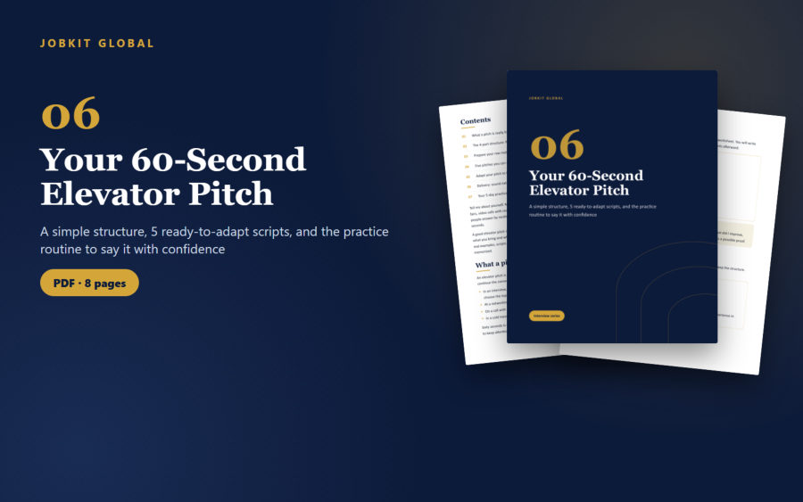

Interview series
Your 60-Second Elevator Pitch
A simple structure, 5 ready-to-adapt scripts, and the practice routine to say it with confidence

Tell me about yourself. Most interviews start with these four words, and so do networking events, career fairs, video calls with recruiters and even casual chats with someone who could help your career. Many people answer by reciting their resume from the beginning, and lose their listener in the first twenty seconds.
A good elevator pitch is short, clear and built for the person in front of you. It tells them who you are, what you bring and what you are looking for, in about a minute. This guide gives you a simple structure, real examples, scripts you can copy and a practice routine so your pitch sounds natural instead of memorized.
Get the complete guide
Printable PDF with every section, the templates and the checklist. Instant download.
What a pitch is really for
An elevator pitch is not a summary of your whole life. Its only job is to make the other person want to continue the conversation. If they ask a follow-up question at the end, your pitch worked.
- In an interview, it sets the frame: the recruiter will often dig into what you mention first, so you choose the topics.
- At a networking event, it helps people remember you and know how they could help.
- On a call with a recruiter, it shows quickly whether your profile matches the roles they are filling.
- In a cold message or email, a written version of your pitch makes your request clear in a few lines.
Sixty seconds is roughly 130 to 160 spoken words. That is enough for a clear message and short enough to keep attention. In some situations you will need a shorter version, which we cover later in this guide.
The 4-part structure: Present, Proof, Plus, Purpose
You do not need to be a natural speaker. You need a structure you can rely on. This one works for almost any situation and keeps you focused on what matters to the listener.
- Present (about 15 seconds): who you are today. Your current role or situation and your field, in one or two sentences. Example: I'm a customer success specialist with four years of experience in software companies.
- Proof (about 20 seconds): one or two concrete achievements that show what you are good at. Use results, numbers you can stand behind, or a short story.
- Plus (about 10 seconds): what makes you different. A skill combination, a background, a way of working, a passion that is useful for the job.
- Purpose (about 15 seconds): what you are looking for and why it connects to the person or company in front of you. End with an opening, not a full stop.
I'm a customer success specialist with four years of experience in B2B software. I currently look after a portfolio of about 60 small business clients. Last year I redesigned our onboarding calls, and the share of clients still active after three months went up noticeably, which my manager now uses as the team standard. What makes me a bit different is that I started in technical support, so I can talk to both engineers and clients without losing anyone. I'm now looking for a role where I can work with larger accounts and help shape the onboarding process, which is why your Customer Success Manager opening caught my attention. I'd love to hear how your team measures client success today.
Prepare your raw material
Before writing your pitch, collect the ingredients. Spend 20 minutes on this worksheet. You will write more than you need, and that is the point: you will pick the strongest elements afterward.
Continued in the full guide
Five pitches you can adapt
Here are five scripts for common situations. Replace the details with your own and keep the structure. Read them out loud: each one takes about 45 to 60 seconds.
Continued in the full guide
Adapt your pitch to the listener
The same pitch should not be used word for word everywhere. Keep your core message, then adjust three things depending on who is listening.
Continued in the full guide
Delivery: sound natural, not memorized
A pitch learned by heart often sounds robotic, and if you forget one word you may lose the whole thread. Instead, memorize the four parts and the key facts, and let the exact words change a little each time.
Continued in the full guide
Your 5-day practice plan
Continued in the full guide
Your pitch is a tool you will use for your whole career. Build it once, refine it after every conversation, and introducing yourself will become one of your strengths.
What you get in the full guide
- What a pitch is really for
- The 4-part structure: Present, Proof, Plus, Purpose
- Prepare your raw material
- Five pitches you can adapt
- Adapt your pitch to the listener
- Delivery: sound natural, not memorized
- Your 5-day practice plan
- Checklist: Before you use your pitch
Get the complete guide
Printable PDF with every section, the templates and the checklist. Instant download.
Need a resume too?
The JobKit Global toolkit: 5 ATS-friendly resume templates, 5 cover letters, a job-search tracker and an interview guide.